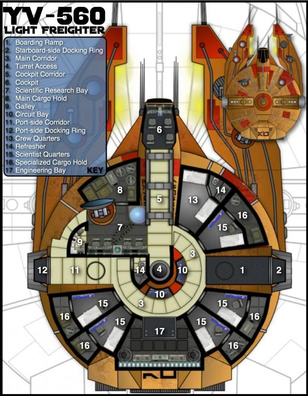
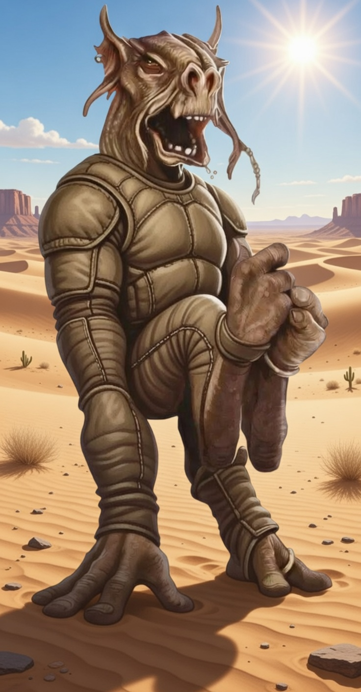

The Nova Phoenix Saga


This YV-560 light freighter, originaly designed as a science vessel, has been modified with greatly enhanced engines and an additional twin blaster cannon turret.
| 4 | 5 | +0 | DEF. FORE/PORT/STARBOARD/AFT | ARMOR |
|---|---|---|---|---|
| 1/-/-/1 | 3 | |||
| HT. THRESHOLD | STRAIN THRESHOLD | |||
| SILHOUETTE | SPEED | HANDLING | 20 | 18 |
Hull Type/Class: Freighter/YV-560
Manufacturer: Corellian Engineering Corporation
Hyperdrive: Primary: Class 2, Backup: Class 15
Navicomputer: Yes
Sensor Range: Long
Ship's Complement: One pilot, one co-pilot/engineer
Encumbrance Capacity: 80
Passenger Capacity: 5
Consumables: Eight months
Customization Hard Points: 4 (1 remaining)

A former champion podracer, a bad crash left him with a limp and a huge debt to a Hutt crime lord.
Dug Ace (Hot Shot)
Motivation: To win.
Obligation: Debt to Gorga (17)
| WOUND THRESHOLD | STRAIN THRESHOLD | SOAK | ENCUMBRANCE | |
|---|---|---|---|---|
| 11 | 14 | 4 | 7 | 3 |
| THRESHOLD | CURRENT | |||
| BRAWN | AGILITY | INTELLECT | CUNNING | WILLPOWER | PRESENCE |
|---|---|---|---|---|---|
| 2 | 4 | 2 | 2 | 3 | 2 |
Astrogation (Int) 1, Cool (Pr) 2, Coordination (Ag) 1, Mechanics (Int) 2, Perception (Cun) 3, Piloting-Planetary (Ag) 2, Piloting-Space (Ag) 3
Brawl (Br) 1, Gunnery (Ag) 1, Ranged - Light (Ag) 1
Underworld (Int) 1
Defensive Driving 1, Grit 3, High G Training 2, Koiogran Turn, Showboat, Skilled Jockey 1